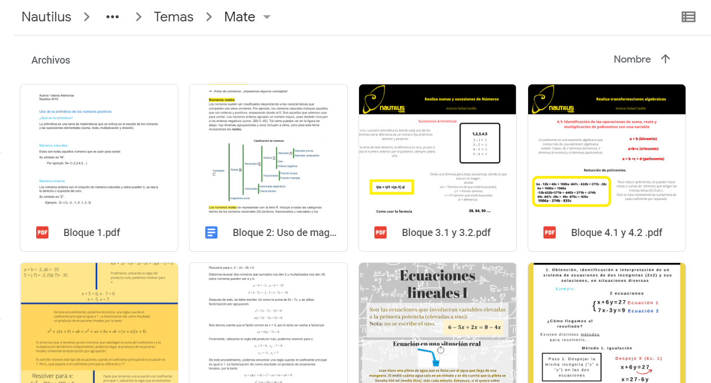
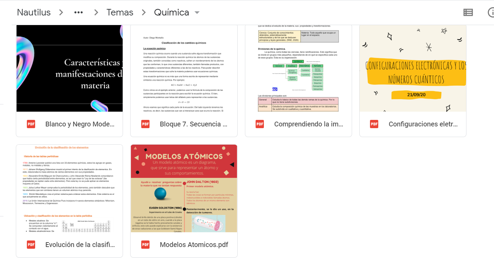
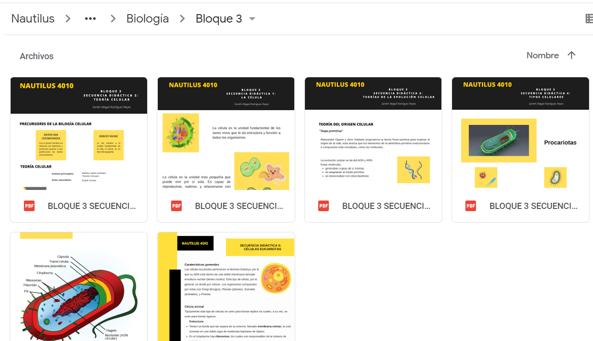

Telebachileratos Michoacan
Duración: Semestres 3° y 4°, todavia activo
Lo que paso
En esta actividad, nos hemos enfocado en la creación de contenido y subirlos a redes
sociales economicas de datos para apoyar a los alumnos de los telebachilleratos
localizados en Michoacán, los que necesitan acceso a varios recursos educativos
gracias a la situación de la pandemia y que desafortunadamente no tienen un
acceso al internet permanente como un módem y son dependientes de datos para ver
el contenido online.
Cuando inicio todo esto en 3° semestre de IB, la maestra Cin se encargó de darnos
todo el contexto necesario, la visita del equipo a Telebachilleratos
(que desafortunadamente no pude asistir), donde se formó una alianza cooperativa
de apoyo, donde se planeaba una segunda visita que fue cancelada por la situación
actual.
Así que se nos ocurrió crear contenido para poder publicarlo en una página de
Facebook lite, ya que el costo de datos móviles es bajo comparado
con otras redes sociales.
Posteriormente de que nos dieron los temarios de las materias de los niños, nos separamos en 4
secciones: Matematicas, Biologia, Fisica y Quimica, donde nos encargamos de crear los materiales
basados en el temario, como binomios en matemáticas, cinética rotacional en fisica, metodo
cientifico en biologia y modelos atómicos en química.
Nos tardamos entre 1 y 2 semestres para crear los materiales y ahora estamos en la creación
de la página web y la subida de materiales, que desafortunadamente no hemos podido hacer
gracias a la situación de 2020 y 2021.
Objetivos Personales y CAS
Personal: Realizar con éxito el contenido y subirlo a la página web/de facebook.
CAS: Perseverancia y trabajo en colaboración

Aquí realice estos objetivos gracias a nuestra perseverancia por 2 semestres en la
creación de actividades y nuestra paciencia ante la situación de la
pandemia, donde también se trabajo en equipo para regular y revisar el
contenido de cada sección o materia.

Mis aprendizajes
Aquí aprendí sobre Telebachillerato, nuestro contexto con ello, la creación de contenido educativo
en programas como canvas.
Por ultimo, tambien aprendi sobre la importancia del proyecto, no solamente el impacto
de la comunidad de Teba, pero también en asuntos globales, ya que esta página se
podría publicar a todas las partes del mundo y también en el equipo, ya que fue usado en el
creativity marathon como proyecto de presentación.
